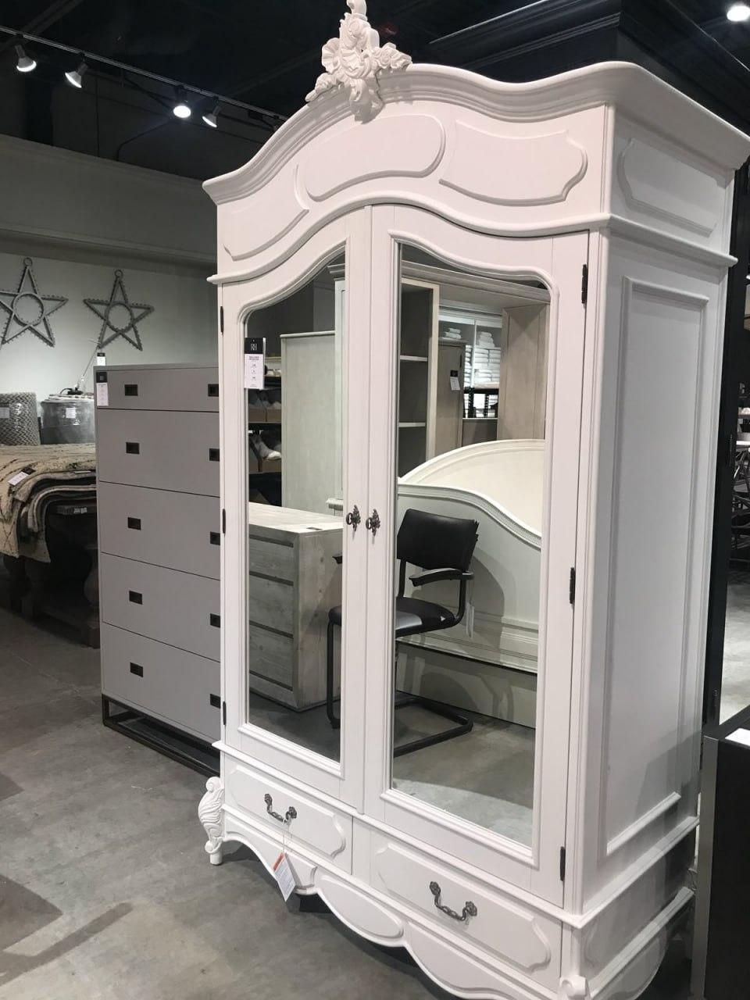
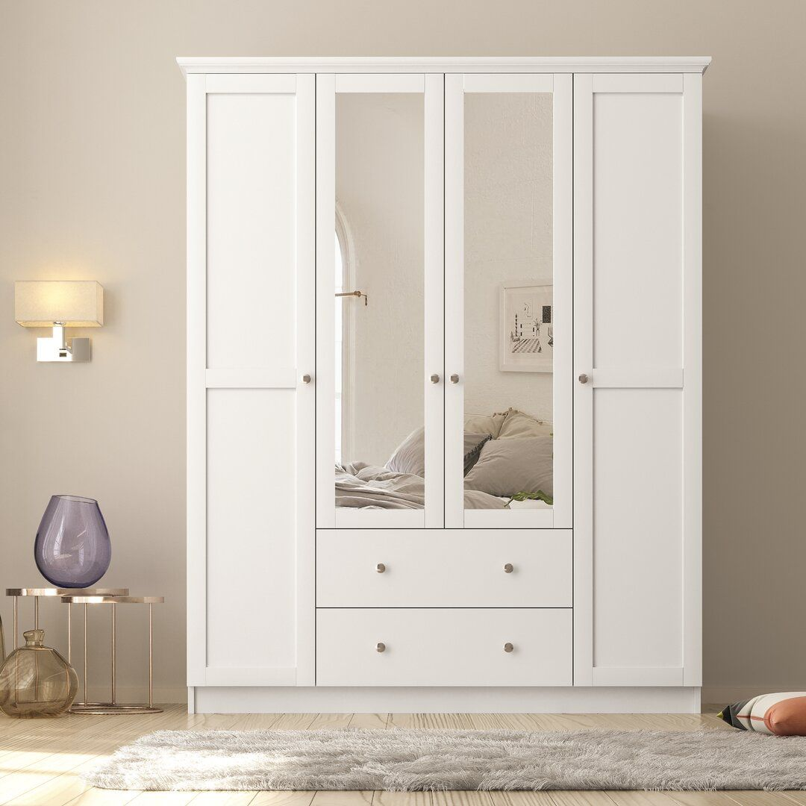
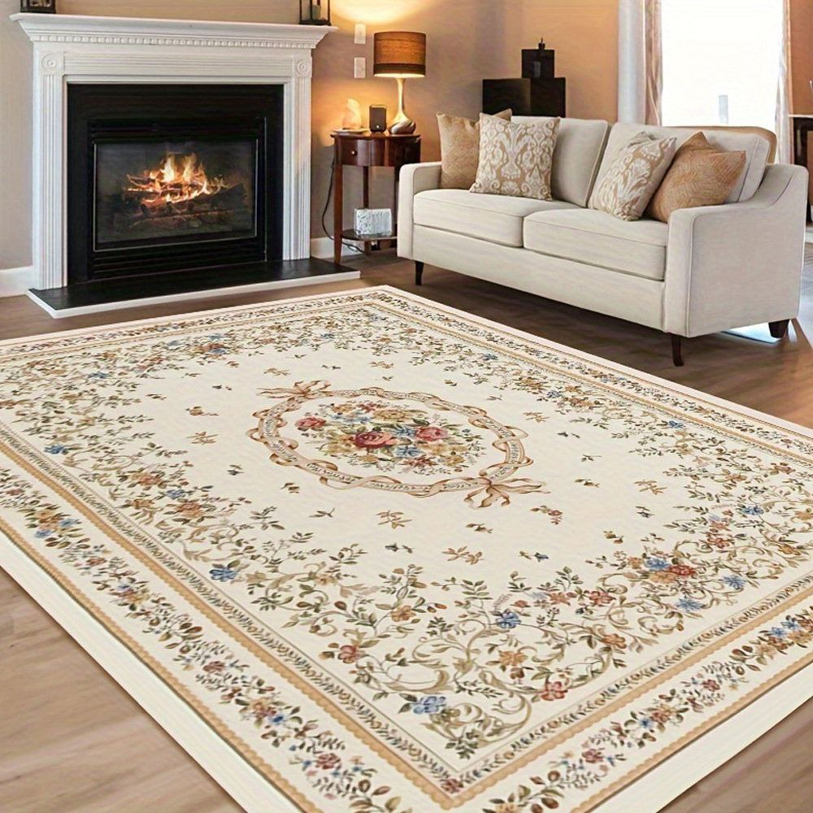
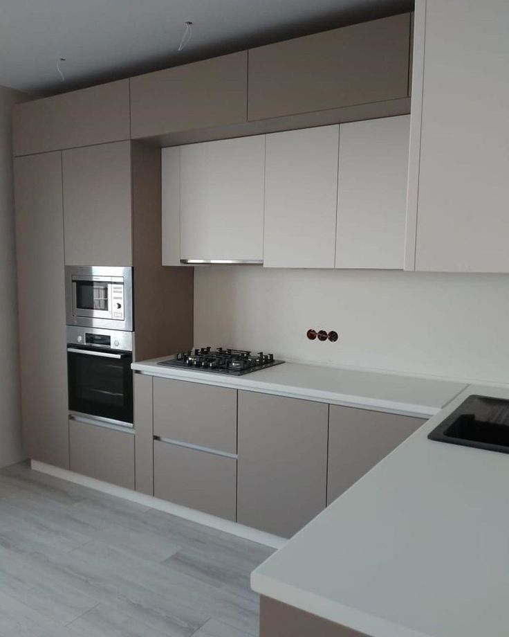
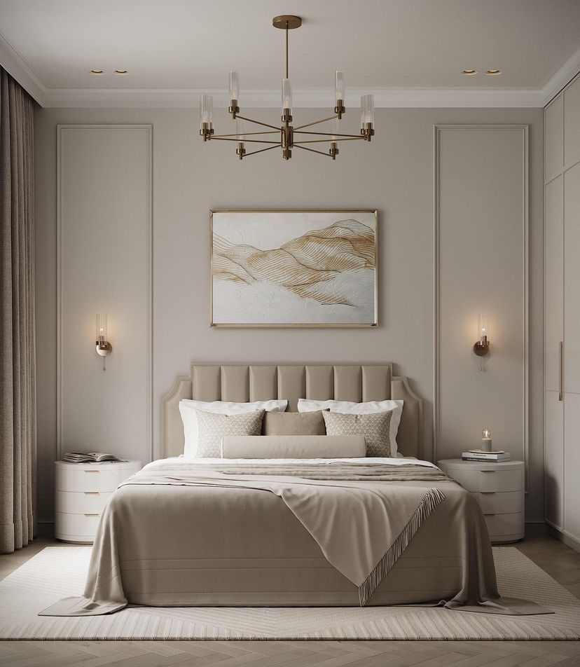

Купить шкаф б/у в Ташкенте недорого
Продаём качественные б/у шкафы по доступным ценам: шкафы-купе, распашные, гардеробные системы, зеркальные шкафы. Импортные и отечественные модели в отличном состоянии. Доставка и сборка по всему Ташкенту.
+998 99 111 23 23
Почему покупают шкафы б/у у нас
Цены ниже рынка
Б/у шкафы в 2-5 раз дешевле новых. Шкафы-купе, распашные, гардеробные — импортные и отечественные по доступным ценам.
Проверенное качество
Каждый шкаф оценивается при покупке. Проверяем двери, направляющие, зеркала, фурнитуру. Продаём только в хорошем состоянии.
Доставка по Ташкенту
Привезём шкаф в любой район Ташкента. Свои грузчики и транспорт — поднимем на этаж, занесём в квартиру.
Большой выбор шкафов
Шкафы-купе, распашные, гардеробные, книжные, встроенные. Комоды и тумбы. Импортная элитная мебель и эконом-варианты.
Какие шкафы можно купить
Шкафы-купе
Двухдверные и трёхдверные шкафы-купе с зеркалами и без. Вместительные, с полками, ящиками и штангами для одежды.

Распашные шкафы
Классические распашные шкафы с 2-4 дверями. Натуральное дерево, МДФ, ДСП. Надёжная фурнитура и петли.

Гардеробные системы
Готовые гардеробные комплекты: стойки, полки, корзины, штанги. Итальянские, турецкие, малайзийские — в 3-5 раз дешевле новых.

Книжные шкафы и стеллажи
Книжные шкафы, витрины, открытые стеллажи. Для гостиной, кабинета, детской. Разные размеры и стили.

Комоды и тумбы
Комоды с ящиками, прикроватные тумбы, тумбы под ТВ. Компактные и вместительные решения для любой комнаты.

Встроенные шкафы
Встроенные шкафы для прихожей, спальни, коридора. С раздвижными и распашными дверями. Экономят пространство.
Как купить шкаф б/у
Позвоните или напишите
Расскажите, какой шкаф нужен: купе, распашной, гардероб. Мы подберём варианты из наличия и скинем фото.
Выберите и договоритесь
Посмотрите фото, уточните размеры и цену. Можно приехать и осмотреть шкаф вживую.
Доставка и сборка
Привезём шкаф, поднимем на этаж и соберём на месте. Оплата при получении.
Частые вопросы о покупке шкафов б/у
Где купить б/у шкаф в Ташкенте?
У нас! Мы постоянно покупаем качественные шкафы у жителей Ташкента и продаём по доступным ценам. Позвоните +998 99 111 23 23 — расскажем, что есть в наличии. Это быстрее и надёжнее, чем искать на OLX.
Сколько стоит шкаф б/у?
Цены зависят от типа и состояния. Шкаф-купе б/у от 300 000 сум, распашной от 400 000, гардеробная система от 1 000 000. Импортные элитные шкафы дороже, но в 3-5 раз дешевле новых.
В каком состоянии шкафы?
Мы профессионально оцениваем каждый шкаф: проверяем двери, направляющие, зеркала, фурнитуру, полки. Продаём только в хорошем и отличном состоянии — без скрытых дефектов.
Есть ли доставка и сборка?
Да, доставляем по всему Ташкенту и области. Свои грузчики и транспорт. Поднимем на этаж, занесём в квартиру, разберём и соберём шкаф на месте.
Какие виды шкафов есть в наличии?
Шкафы-купе, распашные, гардеробные системы, книжные шкафы, стеллажи, комоды, тумбы, встроенные шкафы. Ассортимент обновляется каждый день — звоните, расскажем что есть.
Какие размеры шкафов бывают?
От компактных однодверных (80 см) до больших трёхдверных (240 см и более). Высота стандартная 200-240 см. Глубина 45-60 см. Подберём шкаф под размеры вашей комнаты.
Собираете ли шкаф при доставке?
Да! Наши грузчики разбирают шкаф для транспортировки, а затем собирают на месте в вашей квартире. Все работы включены — вам не нужно искать мастера отдельно.
Где купить шкаф бу в Ташкенте?
Звоните +998 99 111 23 23. Шкафы-купе, распашные, гардеробные бу — всё проверено. Доставка и сборка по Ташкенту бесплатно.
Чем покупка шкафа бу у нас лучше OLX?
На OLX сами ищете грузчиков и разбираете шкаф. У нас — доставка, разборка и сборка включены. Оплата при получении.
Купить шкаф б/у в Ташкенте — недорого и качественно
Ищете, где купить б/у шкаф в Ташкенте? ВсёИзДома — это большой выбор проверенных шкафов по ценам в 2-5 раз ниже магазинных. Мы ежедневно покупаем качественные шкафы у жителей Ташкента и продаём тем, кто хочет обставить квартиру недорого и со вкусом. Шкафы-купе, распашные, гардеробные системы, книжные шкафы и стеллажи — всё в наличии.
Купить шкаф бу в Ташкенте с доставкой — звоните +998 99 111 23 23. Шкаф бу купить у нас быстрее и выгоднее чем OLX: все шкафы проверены, доставляем и собираем. Шкаф-купе бу, распашной бу, гардероб бу — по ценам в 2-5 раз ниже новых.
У нас можно купить б/у шкаф-купе с зеркалами, распашной шкаф из натурального дерева, элитный гардероб в стиле барокко или классика. Импортные шкафы — итальянские, турецкие, малайзийские — по ценам в 3-5 раз ниже новых. Также в наличии комоды, тумбы, стеллажи и встроенные шкафы для любой комнаты.
Доставка и сборка по всему Ташкенту: Чиланзар, Юнусабад, Мирзо Улугбек, Сергели, Яшнабад, Мирабад, Алмазар, Учтепа, Бектемир. Также доставляем в Чирчик, Алмалык и по Ташкентской области. Звоните: +998 99 111 23 23.
Хотите купить шкаф б/у?
Позвоните — расскажем, что есть в наличии, скинем фото и привезём с доставкой и сборкой по Ташкенту!
+998 99 111 23 23